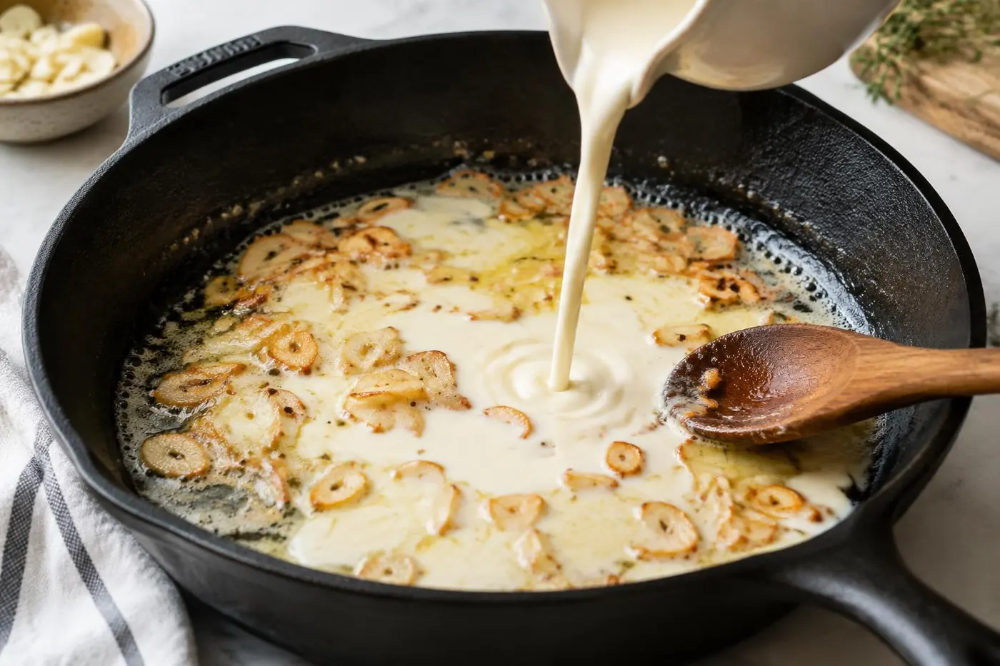

Some nights you need a big bowl of pasta, and you need it fast. This one is built on pantry staples and gets its depth from using garlic two ways: minced for bold flavor and thinly sliced for sweet, golden bites.
The secret to a sauce that is glossy instead of greasy is starchy pasta water. It helps the cream and cheese cling to every strand.
Why you'll love it
20 minutes, start to finish
The sauce cooks while the pasta boils.
Pantry ingredients
Pasta, garlic, butter, cream and cheese.
Crowd-pleaser
Kids and adults both go back for seconds.
Ingredients
Tap an ingredient to check it off as you go.
For the pasta
For the sauce
Cook mode keeps your screen awake while you cook.
Instructions
Tap a step number to mark it as done.
- 1
Boil the pasta
Bring a large pot of water to a boil and add the salt. Cook the fettuccine 1 minute less than the package says. Before draining, scoop out 1 cup of the cooking water.
Tip: The water should taste like the sea. This is your only chance to season the pasta itself. - 2
Toast the garlic
While the pasta cooks, melt the butter in a large skillet over medium-low heat. Add the sliced and minced garlic and cook for 2–3 minutes, stirring, until fragrant and just turning golden.
- 3
Build the sauce
Pour in the cream and bring to a gentle simmer. Let it bubble softly for 3 minutes to thicken slightly.

- 4
Melt in the cheese
Turn the heat to low and stir in the Parmesan a handful at a time until smooth. Keeping the heat low stops the cheese from turning grainy.
- 5
Toss and loosen
Add the pasta to the skillet with ½ cup of pasta water. Toss with tongs for 1–2 minutes until the sauce is glossy and coats every strand. Add more water if it looks thick.
- 6
Finish and serve
Season generously with black pepper, taste for salt and top with parsley and extra Parmesan. Serve right away.
Tips for success
- Grate your own Parmesan. Pre-shredded cheese has anti-caking agents that keep it from melting smoothly.
- Do not let the garlic brown too much. It turns bitter in seconds.
- The sauce thickens as it sits, so keep some pasta water nearby.
Make it your own
Variations
Storage & reheating
Keep leftovers in an airtight container in the fridge for up to 2 days. Reheat gently in a pan with a splash of milk or water, stirring until creamy again.
Recipe FAQ
Can I use milk instead of cream?
Whole milk works, but the sauce will be thinner. Stir 1 tsp of cornstarch into the cold milk first to help it thicken.
Which pasta works best?
Long, flat shapes like fettuccine or linguine hold creamy sauces best, but penne works too.